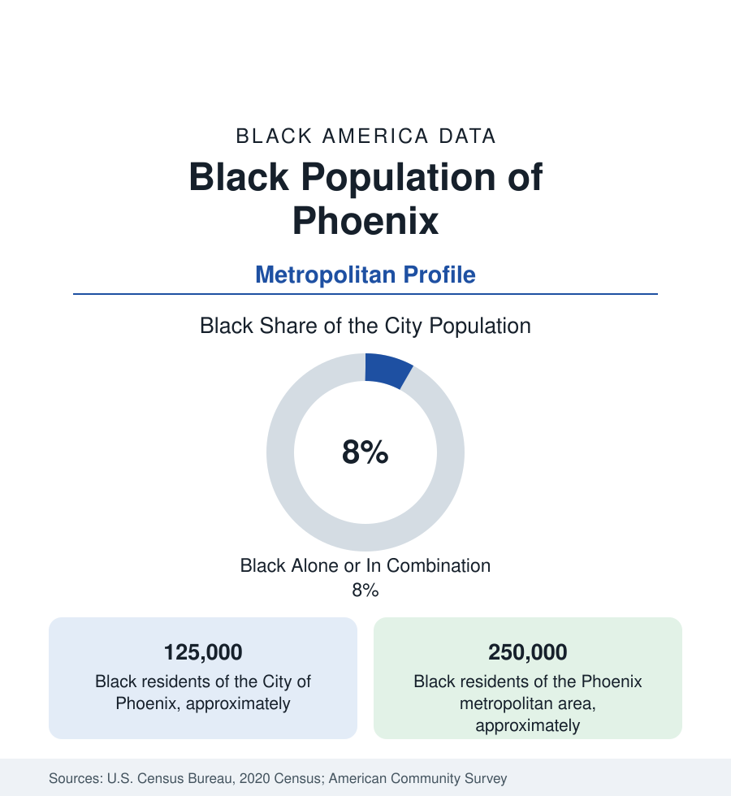

Black Cities
Black Phoenix: A Metropolis Without a Historic Core
Phoenix holds about 125,000 Black residents in the city and 250,000 across the Valley — a Black metropolis built in the suburbs of the boom. The census profile.

Phoenix holds about 125,000 Black residents within the city — Black alone or in combination, roughly 8 percent of its 1.6 million people — and about 250,000 across the metropolitan Valley. Phoenix is the city profile of a Black metropolis without the usual foundation story: no Great Migration terminus, no historic Black business district of national scale, no HBCU. Its Black population was built in the late twentieth century's boom, in subdivisions, by migrants from everywhere — and its data describe what Black urban life looks like when it is suburban from the start.
The Small Historic Core
Historic Black Phoenix was small and confined: a community of a few thousand in the early twentieth century, centered south of the railroad tracks in the warehouse district's edge and in the Eastlake Park neighborhood — the park itself a center of Black civic life — served by the Carver schools (the segregated George Washington Carver High School, now a museum) and a cluster of churches. The postwar decades added the military and manufacturing increments, and the community spread through South Phoenix — the districts south of the Salt River along Central Avenue and Broadway — which remains the city's most heavily Black landscape, a mix of old neighborhoods, industrial land, and new infill. The South Phoenix tracts carry the city's most difficult Black indicators, in the familiar pattern, against metro medians that tell the opposite story.
The Boom's Geography
The Valley's growth machine distributed the new Black population everywhere the subdivisions went. The west side — Glendale, Peoria, Avondale, Goodyear, Surprise — holds large and growing communities around the Luke Air Force Base economy and the Cardinals-stadium district's development. The east — Mesa, Chandler, Gilbert, Tempe — holds the tech-and-university corridor's Black professional population, with Arizona State's enrollment anchoring Tempe. Scottsdale records a small share. The metro's Black residents are, in the survey data, among the most likely in this section to be recent arrivals and homeowners in new construction, and the least likely to live in a majority-Black neighborhood: the Valley's Black geography is dispersed at a scale no older metro matches, its community infrastructure — churches above all, plus the barbershop and restaurant economies and the Divine Nine's alumni chapters — organized regionally rather than by neighborhood.
Institutions Being Built
The institutional layer is the profile's work in progress. Arizona State University, among the nation's largest universities, carries the largest Black enrollment in the state; the community college system (Phoenix College and the Maricopa district) carries the broad base. Black media (the Arizona Informant publishes from Phoenix), a growing Black chamber and professional-association infrastructure, and the megachurches of the south and west sides form the civic skeleton. What the data show as absent is equally diagnostic: no historically Black anchor institution, no Black hospital or bank of scale, a thin bench of Black-owned firms in the business data — the framework a community of a quarter-million is assembling in real time, one generation into its existence at this size.
Composition and Change
The Valley's Black growth rate is the headline of the estimates: among the fastest of any large metro in percentage terms across recent decades, fed by California out-migration (the birthplace data show California-born Black residents as the metro's largest newcomer stream), the Midwest, the South, and African refugee and immigrant communities. Income and homeownership medians run above national Black figures; the age profile is young; the children of the boom cohorts are now the Valley school systems' rising Black enrollment — the data series in which the community's permanence registers first.
Reading the Phoenix Numbers
Phoenix is this section's forward case: the Black metropolis as the twenty-first century builds it — dispersed, suburban, institutionally young, growing on migration rather than roots. Its profile's open question, legible in every dataset here, is whether the civic and economic infrastructure reaches the scale the population already has. The next censuses will grade the answer.
The education data register the same youth: the Valley's big unified districts record Black enrollments in the tens of thousands, and the charter sector — a larger share of Arizona schooling than in any older metro in this section — enrolls a substantial fraction of them, making the state's school-choice data disproportionately a Black Phoenix dataset. The health data, in the public health section's tables, add the desert variables: extreme-heat exposure in the south-side tracts with the thinnest tree canopy is a measured, mapped disparity in the county's own studies.
More in Black Cities
Black Atlanta: Population, Distribution, and Growth of a Black Metropolis
Metro Atlanta holds more than two million Black residents — roughly one in three, second only to New York. The suburban distribution, migration history, and composition of Black Atlanta in the census data.
Black New York: The Largest Black Population in America
The New York metropolitan area holds about 3.4 million Black residents — more than any metro in the nation — and the city itself about two million. The census profile.
Black Washington: The District and the Metro
The Washington metro holds about 1.6 million Black residents, and the District itself — long a majority-Black city — now records a Black share near 41 percent. The census profile.
Source: U.S. Census Bureau, 2020 Census; American Community Survey; Population Estimates Program.